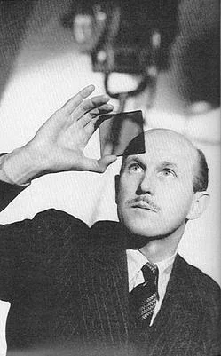
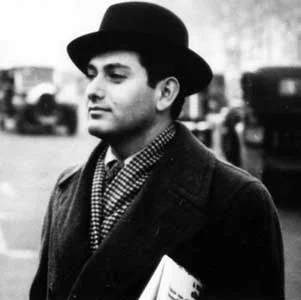

Explore film ↗
Explore film ↗The Red Shoes
Michael Powell and Emeric Pressburger
DIRECTOR PROFILE
The British film-making partnership of Michael Powell (1905–1990) and Emeric Pressburger (1902–1988)—together often known as The Archers, the name of their production company—made a series of influential films in the 1940s and 1950s.


LIFE & CAREER
The British film-making partnership of Michael Powell (1905–1990) and Emeric Pressburger (1902–1988)—together often known as The Archers, the name of their production company—made a series of influential films in the 1940s and 1950s. Their collaborations—24 films between 1939 and 1972—were mainly derived from original stories by Pressburger with the script written by both Pressburger and Powell. Powell did most of the directing while Pressburger did most of the work of the producer and also assisted with the editing, especially the way the music was used.
Adapted excerpt from Wikipedia, CC BY-SA 4.0. Pronunciation notes omitted.
Read the full biographyImage: See source file page. Source & rights: No free licence stated ↗.
Portraits: Michael Powell and Emeric Pressburger. Pressburger photograph source and rights.
Profile reference: Director background ↗
Open this director checklist ↗
A selection of this director’s films available in the archive.
Explore film ↗Michael Powell and Emeric Pressburger
Michael Powell and Emeric Pressburger